在本课程中您将会学到：
- 搭建一个单节点 Elasticsearch 服务，并且配置好 Kibana 管理图形管理界面。
- 学习可观测性的基本感念和实施步骤
- 搭建和配置服务健康检查的探针
- 部署采集操作系统性能监控指标的流程
- 配置操作系统日志的采集和分析工具
- 搭建用于 APM 追踪分析的后台服务
- 运行一个多层架构的宠物商店应用，对各个子服务进行 APM 监控埋点
- 配置常用的服务质量监控大屏
演示应用
本工作坊课程基于如下的应用系统。
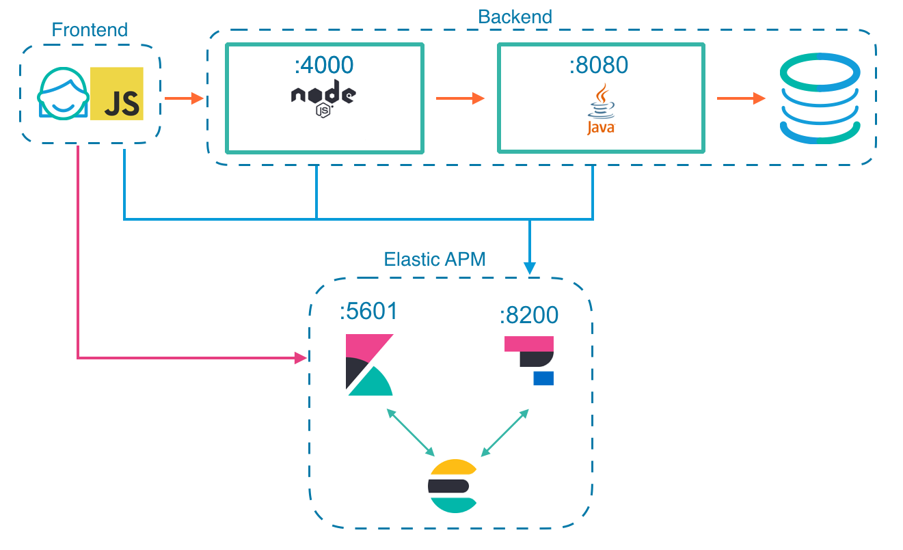
应用基本概况：
- 多层宠物商店应用系统
- 所有组件都部署在一个虚拟机上
- 包括前端、后端和内置的数据库
- 使用到的而技术有 JavaScript、NodeJs 和 Java Spring 等。
- 本应用系统是被监控的对象
Elastic Stack 的基本状况：
- 版本 7.9.3
- 组件 Elasticsearch、Kibana、APM、Filebeat、Metricbeat 和 Heatbeat。
- 所有组件都部署在同一个虚拟机上。
可观测性构建四步法
可观测性依赖于应用系统自身和监控工具平台的配合实现。
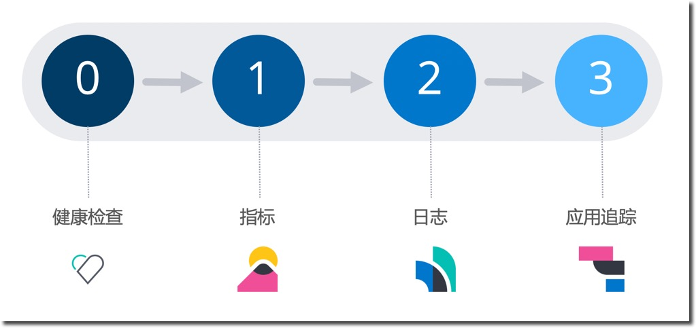
分层次的构建可观测性的推荐过程如下：
- STEP0：使用 Heatbeat 构建轻量灵活的服务健康检查能力
- STEP1：使用 Metricbeat 构建全面细致的指标采集能力
- STEP2：使用 Filebeat 构建高维度的日志采集能力
- STEP3：使用 APM 构建分布式应用系统的全堆栈追踪能力
实施服务质量监控
通过以上的四个构建步骤，使用 Elastic Stack 实施四大服务质量监控能力的构建，搭建了持续统一运维管理的工具平台。
使用 SRE 基于‘用户旅程'或‘系统边界'的 SLO 分析设定方法，从 Elastic Stack 的已有数据采集能力中，选取第批直接可用的 SLI 采集点。在基于 SLO 的监控过程中，不断的优选 SLI，调整告警的数量和质量，为开发团队提供持续有效的反馈。
最后，通过 SLO 服务质量目标监控大屏，实时的将生产环境的状态反馈给所有相关团队。最后收尾以基于 SLO 的监控告警（本课程不涉及告警的配置，告警可以用 Elastic Stack 的 watcher 实现）。
检查清单如下：
- 一台可以用的虚拟机（Linux 操作系统、内存不小于 4GB），虚拟机的所有端口都可以访问，或者至少开放：22、9200、5601。建议是用一个本地的虚拟机，或者使用一个符合以上要求的云主机。
- 为了达到最佳的练习体验，建议使用 macOS 操作系统或者 Linux 操作系统作为本地操作的桌面环境。
- 在以上要求的 Linux 虚拟机或者是 macOS 操作系统本机上：完成名为"搭建单节点 Elasticsearch 集群服务"的前置课程练习，预计耗时 40 分钟
本课程的所有程序文件、软件包的下载地址如下：
- 百度网盘 https://pan.baidu.com/s/1fqLLEanfkmLYBZJBrKhiYQ
- 提取码：0kx6
请在网盘文件加中，找到对应课程的目录，下载该目录中的所有文件到本机（macOS），或者上传到云主机中。
在这一节中，你将学习到：
- 安装 Heartbeat
- 配置主配置文件
- 初始化和运行 Heatbeat 服务
- 在 Kibana 中查看 Uptime app 中的数据
下载 Heatbeat
下载和解压缩 Heartbeat 软件包到本地的目录中，根据操作系统的不同，选取合适的操作命令。已经下载过了课程准备软件包的，请忽略后续所有下载命令。
macOS 操作系统：
curl -L -O https://artifacts.elastic.co/downloads/beats/heartbeat/heartbeat-7.9.3-darwin-x86_64.tar.gz
tar xzvf heartbeat-7.9.3-darwin-x86_64.tar.gz
Linux 操作系统：
curl -L -O https://artifacts.elastic.co/downloads/beats/heartbeat/heartbeat-7.9.3-linux-x86_64.tar.gz
tar xzvf heartbeat-7.9.3-linux-x86_64.tar.gz
进入 heartbeat 的目录中，查看和了解目录中的文件。
编辑主配置文件
修改名为 heartbeat.yml 的配置文件，确保其中的内容至少包括：
heartbeat.config.monitors:
path: ${path.config}/monitors.d/*.yml
reload.enabled: true
reload.period: 5s
heartbeat.monitors:
- type: http
id: my-monitor
name: 1-node-es
urls: ["http://localhost:9200"]
schedule: '@every 5s'
setup.template.settings:
index.number_of_shards: 1
index.codec: best_compression
setup.kibana:
output.elasticsearch:
hosts: ["localhost:9200"]
processors:
- add_observer_metadata:
geo:
name: China-BJ
location: "39.907568, 116.3972302"
也可以用以上内容替换原始配置文件中的内容。
参数配置简要介绍：
- 每 5 秒钟检查
monitors.d目录中是否有服务探针配置文件更新 - 默认启动一个名为 my-monitor 的 http 探针，检查目标 Elasticsearch 服务的状态
- 将服务健康检查的数据输出索引到本机的 Elasticsearch 服务，即 localhost:9200
- 为本健康检查服务器配置可观测性地域元数据，名称为 China-BJ 的经纬度
初始化和运行 Heatbeat 服务
运行下面的命令初始化和运行 Heatbeat 服务。
macOS 和 Linux 命令相同如下：
./heartbeat setup
./heartbeat -e
命令参数解释：
- setup 的作用是初始化 Heatbeat 的索引，导入相关的数据管理策略
- -e 启动 Heartbeat 服务，将服务运行的日志显示在控制台
查看 Uptime 应用
进入 Kibana 页面，点击左上角的菜单，在左侧菜单中点击 Uptime 链接。
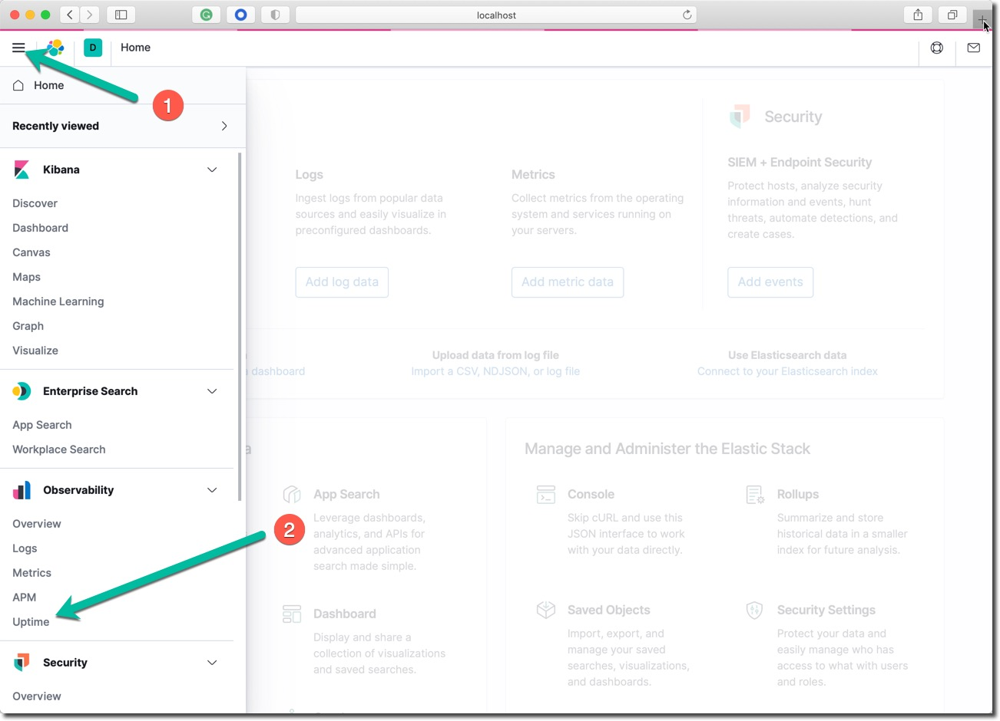
在 Uptime 服务器健康检查 App 中查看如下界面。
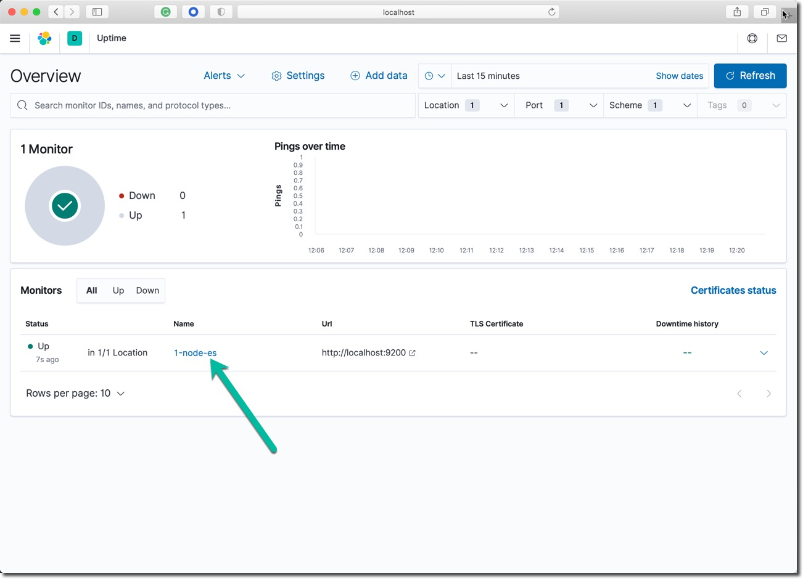
点击这个名为 ‘1-node-es' 的连接查看，这个采集点的监控结果。
点击 Observability 下方的 Overview 链接，在可观测性全景视图中查看页面下方的 Uptime 部分；其中显示了探针的数量，以及 Up 和 Down 状态的统计数据。
下载 Metricbeat
下载和加压缩 Metricbeat 软件包在本地的目录中。
macOS 的命令如下：
curl -L -O https://artifacts.elastic.co/downloads/beats/metricbeat/metricbeat-7.9.3-darwin-x86_64.tar.gz
tar xzvf metricbeat-7.9.3-darwin-x86_64.tar.gz
Linux 的命令如下：
curl -L -O https://artifacts.elastic.co/downloads/beats/metricbeat/metricbeat-7.9.3-linux-x86_64.tar.gz
tar xzvf metricbeat-7.9.3-linux-x86_64.tar.gz
进入加压缩后的目录metricbeat-7.9.3-darwin-x86_64，查看 Metricbeat 的数据采集程序目录，熟悉目录中的结构和文件。
编辑主配置文件
查看默认的主配置文件 metricbeat.yml；确保配置文件中的 processors 这个段落的内容如下。
processors:
- add_host_metadata:
netinfo.enabled: true
cache.ttl: 5m
- add_cloud_metadata: ~
- add_docker_metadata: ~
- add_kubernetes_metadata: ~
- add_fields:
target: ''
fields:
service.name: 'Pet Clinic'
service.id: 'petclinic'
该配置文件的其它部分不需要修改，只修改上面的这个部分。
以上参数解释：
- netinfo.enabled: true 收集所有网卡的配置信息
- service.name 和 service.id 设定运行在本操作系统上的应用系统的名字，用于丰富每一个指标采集点的元数据
初始化和运行 Metricbeat 服务
在 Metricbeat 软件包的目录中，在命令行下运行下面的两条命令。
./metricbeat setup
./metricbeat -e
命令参数解释：
- setup 命令会初始化相关索引和配套的管理策略
- -e 命令会启动 Metricbeat 服务，并将运行日志输出在控制台上
等待日志中输出下面的这一行。
Connection to backoff(elasticsearch(http://localhost:9200)) established
到此为止，Metricbeat 的服务器端初始化和本机操作系统指标数据的采集配置完毕，操作系统的各项监控指标被持续的发送会后台。
查看相关仪表板
Metricbeat 采集代理程序默认会启用操作系统指标采集的模块，setup 命令会一次性的将所有 Metricbeat 预制的上百种仪表板加载到后台，供 Kibana 浏览和搜索指标数据使用。
查看 Metricbeat 的相关仪表板
- 打开 Kibana 界面
- 打开左侧菜单栏，点击 ‘Dashboard' 选项
- 在页面的搜索框中输入 system 后，查看 Metricbeat 自带的仪表板，它们是 setup 命令导入的。
- 点击查看名为 "[Metricbeat System] Overview ECS" 的仪表板。
- 在 System Overview 和 Host Overview 的两个视图中切换查看
Host Overview 的显示结果如下。
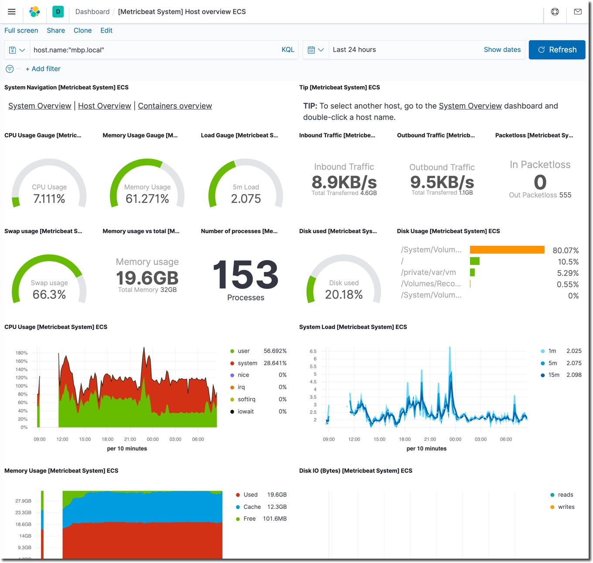
视图解释说明：
- System Overview 是当前所有被监控系统的指标统计汇总
- Host Overview 是某一个操作系统的监控指标展示
查看 Metrics 应用
在 Kibana 的左侧栏菜单中，点击 ‘Observability' 部分的 ‘Overview' 链接。查看此界面中的 ‘Metrics'部分。这里显示了目前 Metricbeat 监控的服务器数量，以及四个重要参数的平均值。
在 Kibana 的左侧栏菜单中，点击 ‘Observability' 部分的 ‘Metrics' 链接。
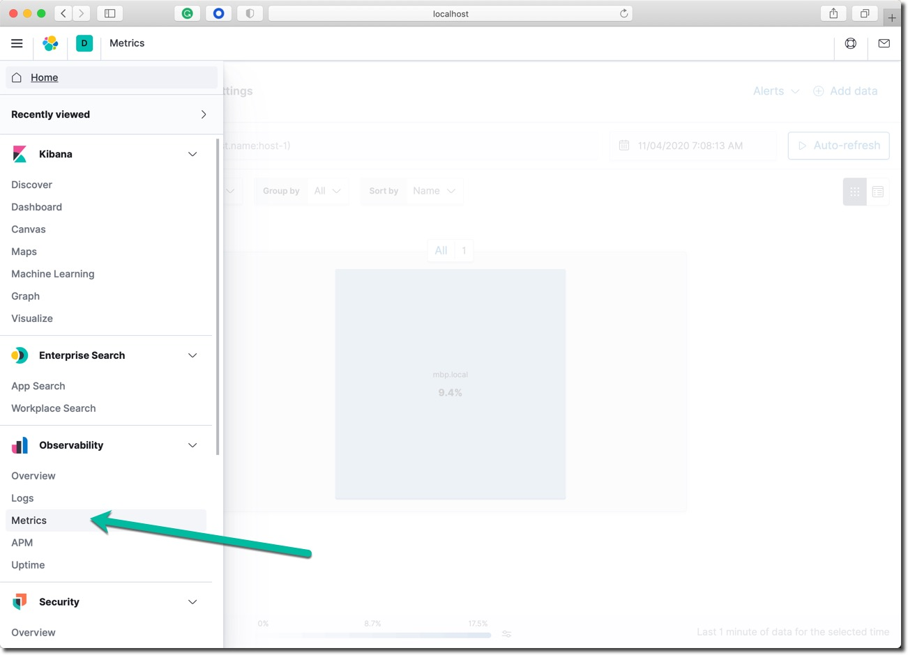
从这里进入Kibana 中可观测性的指标 App，在这里可以做Uptime、指标、日志和 APM 的关联分析浏览。
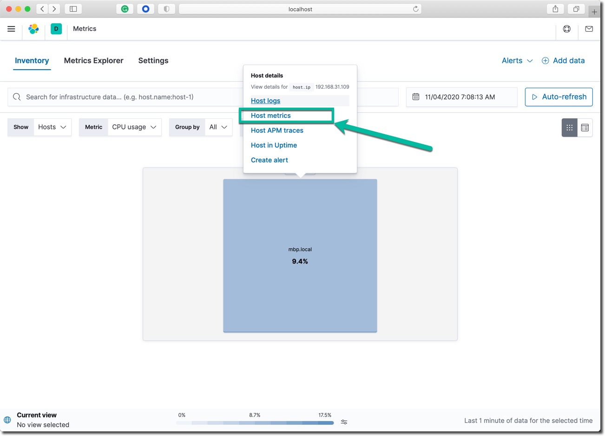
如上图所示，点击图中的主机名，打开和他相关的关联分析菜单。
- 点击菜单中的 Host metrics 链接，查看指标查看界面
- 点击菜单中的 Host in Uptime 链接，查看这台主机上运行的各个服务的健康检查状态
在后续的课程中，我们逐步添加基于主机的日志关联分析，和 APM 关联分析。
下载 Filebeat
下载和解压缩 Filebeat 软件包在本地的目录中。
macOS 的命令如下：
curl -L -O https://artifacts.elastic.co/downloads/beats/filebeat/filebeat-7.9.3-darwin-x86_64.tar.gz
tar xzvf Filebeat-7.9.3-darwin-x86_64.tar.gz
Linux 的命令如下：
curl -L -O https://artifacts.elastic.co/downloads/beats/filebeat/filebeat-7.9.3-linux-x86_64.tar.gz
tar xzvf filebeat-7.9.3-linux-x86_64.tar.gz
进入加压缩后的目录filebeat-7.9.3-darwin-x86_64 或者 filebeat-7.9.3-linux-x86_64，熟悉 Filebeat 日志文件采集代理的目录结构和内容。
编辑主配置文件
查看默认的主配置文件 filebeat.yml；确保配置文件中的 processors 这个段落的内容如下。
processors:
- add_host_metadata:
when.not.contains.tags: forwarded
netinfo.enabled: true
cache.ttl: 5m
- add_cloud_metadata: ~
- add_docker_metadata: ~
- add_kubernetes_metadata: ~
- add_fields:
target: ''
fields:
service.name: 'Pet Clinic'
service.id: 'petclinic'
以上参数解释：
- netinfo.enabled: true 收集所有网卡的配置信息
- service.name 和 service.id 是运行在本操作系统上的应用系统的名字
Filebeat 的 processors 处理器机制可以实现丰富的日志字段丰富和处理，基于 Elastic ECS 通用数据定义的日志元数据丰富在本课程中不作讲解。请大家课后深入学习。另外应用程序和日志采集工具的配合也不在此做深入讨论，请开发者在设计程序的日志输出机制时，同时考虑到后期的日志采集工具。
初始化和运行 Filebeat 服务
在 Filebeat 软件包的目录中运行下面的两条命令。
./filebeat setup
./filebeat modules enable system
sudo chown -R root module
sudo chown -R root modules.d/
sudo ./filebeat -e
命令参数解释：
- setup 命令会初始化相关索引和管理策略
modules enable system启用操作系统日志采集模块，Filebeat 默认不开启任何采集模块- -e 命令会启动 Metricbeat 服务，并将运行日志输出在控制台上
等待日志中输出下面的这一行。
Connection to backoff(elasticsearch(http://localhost:9200)) established
到目前为止实现了 Filebeat 日志采集代理的后台相关组件初始化，Filebeat 采集代理开始持续的采集操作系统的日志。
查看 Filebeat 相关仪表板
查看 Filebeat 的相关仪表板
- 打开 Kibana 界面
- 打开左侧菜单栏，点击 ‘Dashboard' 选项
- 在页面的搜索框中输入 system 后，查看 Filebeat 自带的仪表板，它们是 setup 命令导入的。
- 点击查看名为 "[Filebeat System] Syslog dashboard ECS" 的仪表板。
该仪表板内有若干个可以切换的视图：
- Syslog
- Sudo commands
- SSH logins
- New users and groups
Syslog 视图的显示效果如下：
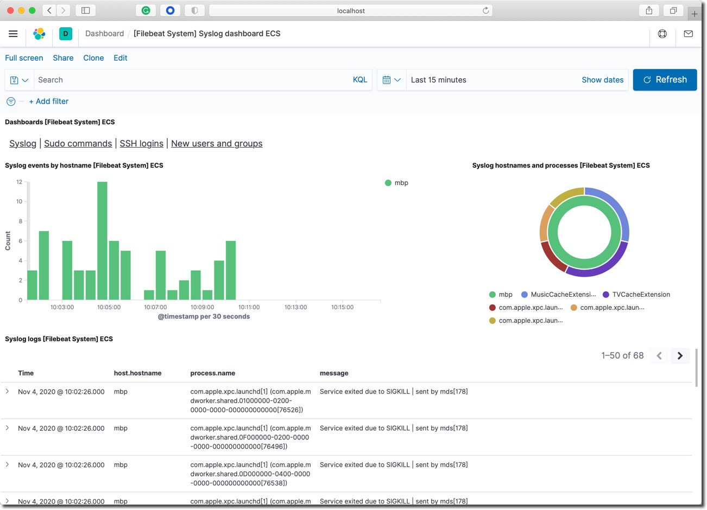
查看 Logs 应用
在 Kibana 的左侧栏菜单中，点击 ‘Observability' 部分的 ‘Overview' 链接。查看此界面中的 ‘Lobs'部分。这里显示了目前 Filebeat 当前的采集率，柱状图显示的是每分钟采集了多少条日志信息，以及日志来自于那些模块。
在 Kibana 的左侧栏菜单中，点击 ‘Observability' 部分的 ‘Logs' 链接。
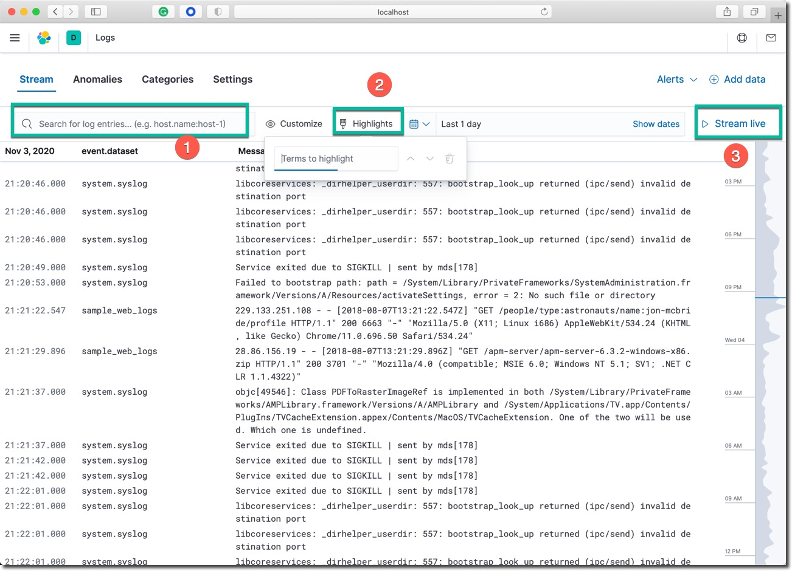
在这个统一的日志流查看界面中，尝试使用以上三个高亮的功能：
- 按日志字段搜索：尝试搜索
service.id: petclinic - 日志高亮显示：输入屏幕上能看到的预期存在的关键词，观察屏幕上的变化，特别是最右侧的波形图的变化。
- 点击
Stream live开启日志数据实时数据流功能，这个功能近似于 tial -f 的查看日志文件的更新。
打开 ‘Metric' 菜单中的主机查看模式，点击主机图标，打开主机关联数据查看菜单，选择 Host Logs 选项。
下载并运行 APM 服务器
下载和加压缩 APM Server 软件包在本地的目录中。
macOS 的命令如下：
curl -L -O https://artifacts.elastic.co/downloads/apm-server/apm-server-7.9.3-darwin-x86_64.tar.gz
tar xzvf apm-server-7.9.3-darwin-x86_64.tar.gz
cd apm-server-7.9.3-darwin-x86_64/
Linux 的命令如下：
curl -L -O https://artifacts.elastic.co/downloads/apm-server/apm-server-7.9.3-linux-x86_64.tar.gz
tar xzvf apm-server-7.9.3-linux-x86_64.tar.gz
cd apm-server-7.9.3-darwin-x86_64/
在 APM 服务器的目录中，查看主配置文件 apm-server.yml 的默认内容，确保其中的内容至少包含以下内容。
apm-server:
host: "0.0.0.0:8200"
rum:
enabled: true
output.elasticsearch:
hosts: ["localhost:9200"]
或者用以上的内容替换默认的配置文件。
配置参数含义：
- 设置 APM 服务器对外部所有网络地址提供服务，端口为 8200
- 启用实时用户体验监控
- 指向运行在本机的 Elasticsearch 服务
在命令行下启动 APM 服务器。
macOS 和 Linux 下命令相同。
./apm-server setup
./apm-server -e
观察服务的日志，在没有报错的情况下，进入下一个步骤。
运行宠物商店演示程序
首先确认一下当前操作系统中 JDK 的版本号，没有的话需要自行安装。
java --version
openjdk 11.0.8 2020-07-14
OpenJDK Runtime Environment AdoptOpenJDK (build 11.0.8+10)
OpenJDK 64-Bit Server VM AdoptOpenJDK (build 11.0.8+10, mixed mode)
下载并解压缩宠物商店示例应用。查看 ls petclient/elastic-apm-agent-1.18.0.jar 文件。该文件和示例程序在同一个文件夹中。
启动宠物商店后台的核心应用服务，并且同时挂载 javaagent 代理。
java -javaagent:elastic-apm-agent-1.18.1.jar -Delastic.apm.service_name=petclinic-spring -Delastic.apm.server_urls=http://localhost:8200 -jar spring-petclinic-1.5.16.jar
启动参数简介：
- 声明该服务的名称为 petclinic-spring
- 加载 elastic java agent 的 jar 文件
- 配置 APM 服务器的位置网址 elastic.apm.server_urls "http://localhost:8200"
- 另外这个用默认使用了内置的数据库
上面的这条命令会启动宠物商店演示应用系统的后台服务，并加载了Elastic APM 对 Java 应用的无痛埋点代理。
启动宠物商店的前端应用，这是一个 node.js 的应用，先确保当前练习的操作系统中已经安装了 node 12+ 的版本。
npm version
{
kibana: '7.9.3',
npm: '6.14.8',
ares: '1.15.0',
brotli: '1.0.7',
cldr: '36.0',
http_parser: '2.9.3',
icu: '65.1',
llhttp: '2.0.4',
modules: '72',
napi: '5',
nghttp2: '1.40.0',
node: '12.16.2',
openssl: '1.1.1e',
tz: '2019c',
unicode: '12.1',
uv: '1.34.2',
v8: '7.8.279.23-node.34',
zlib: '1.2.11'
}
进入前端应用的目录，查看该应用的配置文件 config.js ，其内容如下：
var config = {
apm_server: process.env.ELASTIC_APM_SERVER_URL || 'http://localhost:8200',
apm_server_js: process.env.ELASTIC_APM_SERVER_JS_URL || 'http://localhost:8200',
apm_service_name: process.env.ELASTIC_APM_SERVICE_NAME || 'petclinic-node',
apm_client_service_name: process.env.ELASTIC_APM_CLIENT_SERVICE_NAME || 'petclinic-react',
apm_service_version: process.env.ELASTIC_APM_SERVICE_VERSION || '1.2.0',
api_server: process.env.API_SERVER || 'http://localhost:8080',
api_prefix: process.env.API_PREFIX || '/petclinic/api',
address_server: process.env.ADDRESS_SERVER || 'http://localhost:5000',
distributedTracingOrigins: process.env.DISTRIBUTED_TRACINGS_ORIGINS || 'http://petclinic-client:3000,http://petclinic-server:8000,http://localhost:4000,http://localhost:8080,http://localhost:8081'
}
重要配置参数讲解：
- APM 追踪服务器的信息
- node.js 服务的名称和版本
- 前端应用服务器的地址和端口
- ELASTIC_APM_SERVER_JS_URL 是前端浏览器链接 apm 服务器的网址，如果是虚拟机或者是云主机需要替换成实际的 IP 地址 ‘http://192.168.50.11:8200'
这个应用前端的代码中已经进行了 Elastic APM 对 Node.js 应用的无痛埋点配置，在进行一个简单的依赖包安装命令后，启动该应用。
macOS 和 Linux 下命令相同：
npm start
观察宠物商店前端应用的正常启动过程。然后在浏览器中访问网址：http://localhost:4000/ 如果宠物商店系统的工作正常，应该看到如下界面。
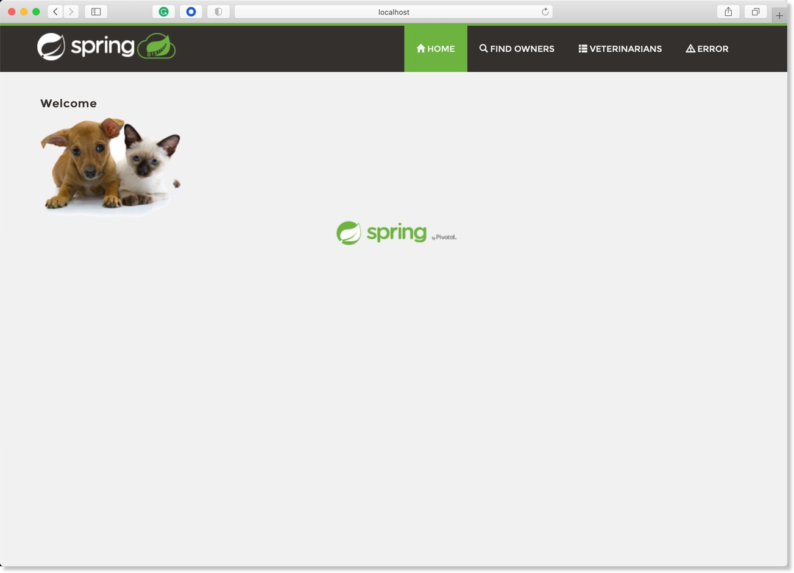
点击 Home 按钮右侧的其它三个菜单，多点击几次，制造一些人为的系统功能调用，目的是生成 APM 追踪数据。
下一步进入 APM 应用查看追踪数据结果。
查看 APM 应用
在 Kibana 的左侧栏菜单中，点击 ‘Observability' 部分的 ‘Overview' 链接。查看此界面中的 ‘APM'部分。这里显示了目前 APM 当前收到了 3 个服务发送来的追踪数据，柱状图显示了，这些服务每分钟的交易发生次数。
在 Kibana 的左侧栏菜单中，点击 ‘Observability' 部分的 ‘APM' 链接。

使用 APM 应用的界面查看上一步生成的追踪数据。
- 点击每一个服务的详细信息，了解它的交易性能概要、报错、性能指标和服务地图
- 点击服务地图查看宠物商店这个多层应用的服务依赖调用关系，如下图所示。
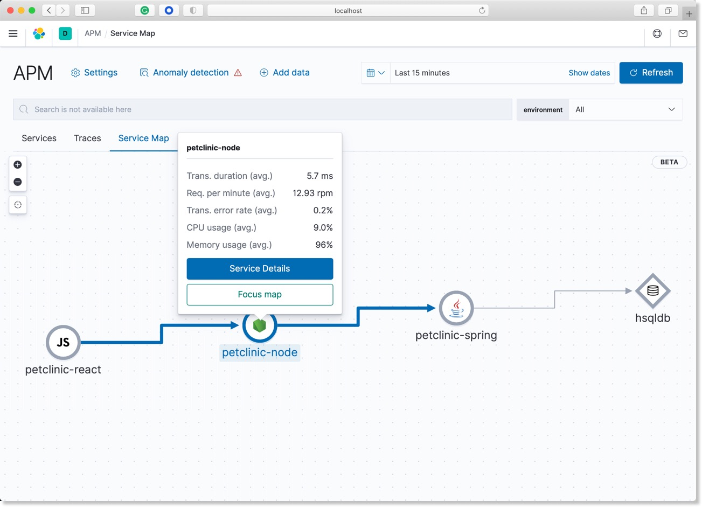
上图从左到右显示了宠物商店应用的调用路径，点击某个服务，查看该服务的概况，点击查看服务详情按钮。
最后一步深度查看某个服务的详细交易追踪数据和关联数据查看。
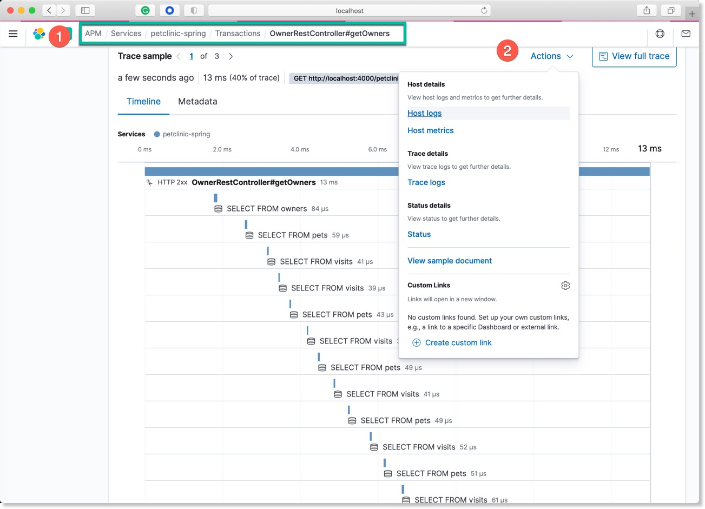
在 APM 应用中选择查看 petclinic-sping 服务的详细情况，在 Transactions 中查看名为 OwnerRestController#getOwners 的调用。如上图所示，点击 Action 查看和这个服务相关的主机日志和指标，查看其它选项。
增加前端服务的健康检查探针
在宠物商店系统正常运行的状态下，在 Heatbeat 的健康检查系统中增加一个新的用于检查改服务前端的探针。
进入 heartbeat-7.9.3-darwin-x86_64/monitors.d 目录。添加一个名为 petclinic.yml 内容如下的配置文件。
- type: http
id: Petclinic-100
name: Petclinic-Svc
schedule: '@every 5s'
hosts: ["http://localhost:4000"]
ipv4: true
ipv6: true
mode: any
等待5 秒后，观察 Uptime 的界面，名为Petclinic-Svc 的服务应该出现，该探针将持续监控前端服务的 4000 端口，并返回健康检查的结果到 Uptime 应用中。
使用 Canvas 的画布功能，定制如下的 SLO 监控大屏。
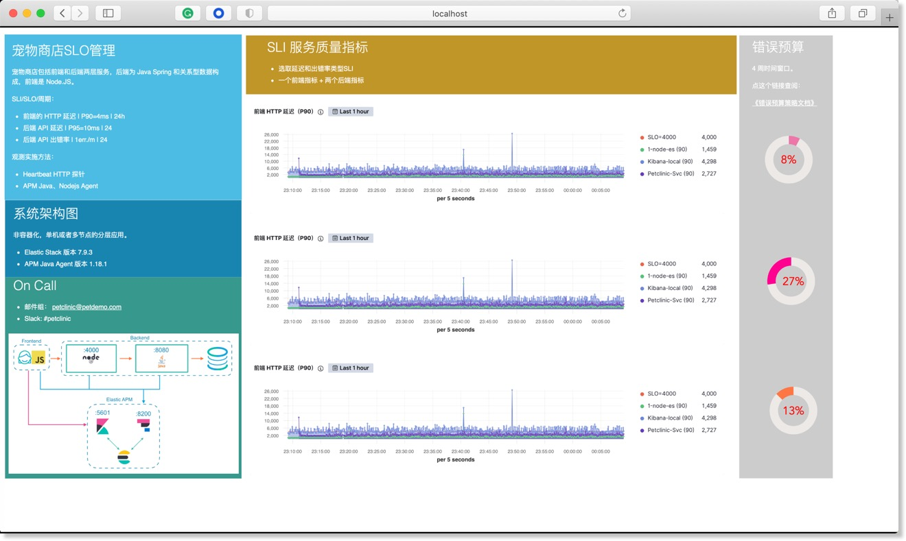
下载名为 canvas-workpad-petclinic.json 的示例文件。
在 Kibana 左侧的菜单里选择 Canvas 画布菜单，点击 Import workpad JSON file 按钮，导入后既可以看到名为 宠物商店：SLO管理监控大屏 的监控画布。